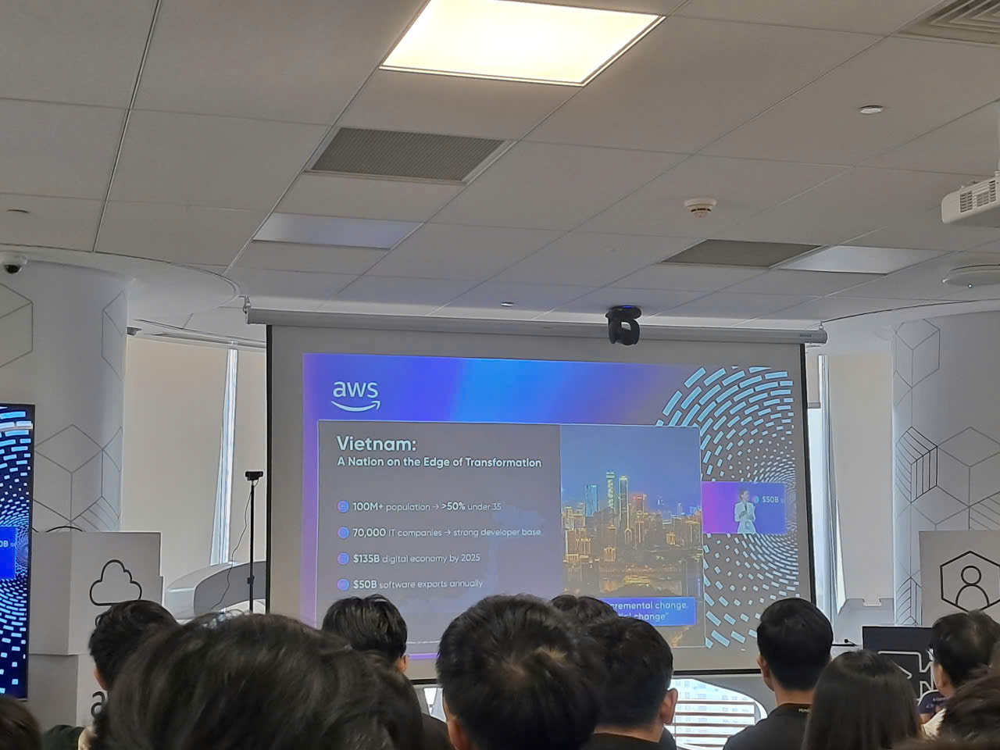
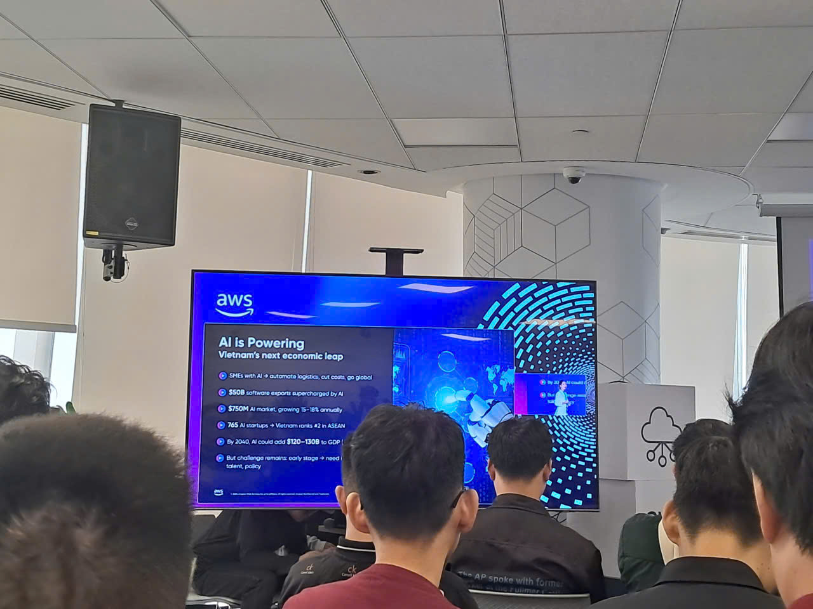
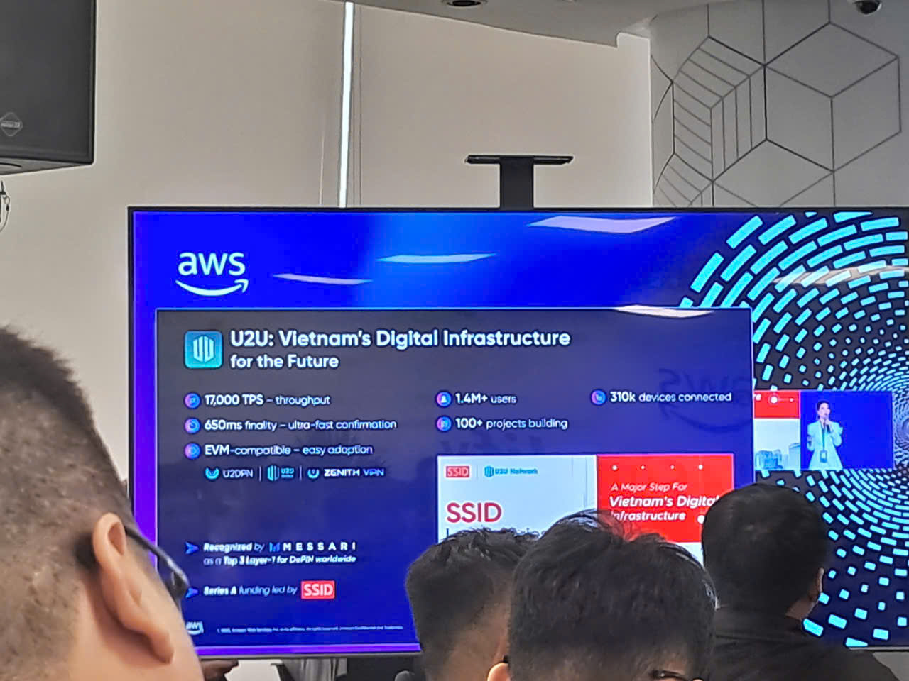

Event 2
Báo cáo tóm tắt: “AWS Cloud, AI & Innovation Summit”
Mục tiêu sự kiện
- Trình bày chiến lược quốc gia về mở rộng hạ tầng cloud và thúc đẩy chuyển đổi số
- Củng cố quan hệ đối tác Hoa Kỳ – Việt Nam trong công nghệ và đổi mới sáng tạo
- Chia sẻ góc nhìn về AI, blockchain và phát triển hệ sinh thái định hình tương lai Việt Nam
- Nhấn mạnh các sáng kiến của AWS về phát triển nhân tài, tăng khả năng tiếp cận cloud và AI có trách nhiệm
- Cung cấp kiến thức kỹ thuật thực hành về phát triển ứng dụng theo hướng AI và bảo mật AI
Diễn giả
- Đại diện Chính phủ Việt Nam
- Đại sứ Hoa Kỳ tại Việt Nam
- Eric Elock – CEO phụ trách Việt Nam, Lào, Campuchia & Myanmar
- Chloe Phùng – CEO, U2U
- Erik – Lãnh đạo AWS
- Jaime Valless – Lãnh đạo AWS
- Các chuyên gia kỹ thuật AWS – Các phiên kỹ thuật buổi chiều
Điểm nổi bật chính
Chiến lược quốc gia về hạ tầng cloud và chuyển đổi số
- Chính phủ nhấn mạnh mở rộng điện toán đám mây và hệ thống số là nền tảng cho Công nghiệp 4.0
- Đảm bảo an ninh, an toàn và bảo vệ thông tin trên toàn bộ dịch vụ số
- Tạo điều kiện hợp tác mở giữa khu vực công, doanh nghiệp tư nhân và nhà đầu tư nước ngoài
- Cloud được định vị là yếu tố chiến lược thúc đẩy tăng trưởng kinh tế và hiện đại hóa quốc gia
Quan hệ Hoa Kỳ – Việt Nam và phát triển công nghệ
- Đại sứ Hoa Kỳ nhấn mạnh quan hệ đối tác 30 năm giữa hai quốc gia
- Các công ty công nghệ như AWS đóng vai trò cầu nối thúc đẩy đồng phát triển
- Tập trung vào lợi ích kinh tế song phương và hợp tác dài hạn
Đổi mới thông qua hỗ trợ ngân hàng và hệ sinh thái blockchain – Eric Elock
- Ngành ngân hàng giữ vai trò quan trọng trong việc hỗ trợ hiện đại hóa CNTT
- U2U xây dựng hệ sinh thái giúp doanh nghiệp và người dùng tương tác thông qua blockchain
- Thể hiện cách cloud + blockchain tạo nên các mô hình kinh tế số mới
AI định hình tương lai Việt Nam – Chloe Phùng
- Hai năm trước, nhiều đối tác cho rằng ý tưởng của U2U là “không thể”, nhưng nay đã trở thành hiện thực
- Việt Nam không chỉ bắt kịp xu hướng AI toàn cầu mà còn góp phần định hình cuộc cách mạng
Tác động thực tế của AI tại Việt Nam
-
Giáo dục:
- 60% học sinh/sinh viên Việt Nam sử dụng ứng dụng EdTech
- AI phá vỡ rào cản ngôn ngữ và tăng mức độ tương tác trong học tập
-
Kinh tế:
- Hơn 765 startup AI, xếp thứ 2 trong ASEAN
- Dự kiến đóng góp GDP: 120–130 tỷ USD
-
Tác động xã hội:
- Bệnh viện ứng dụng AI giúp rút ngắn thời gian khám xuống 5 phút/ca
- AI hỗ trợ quản lý giao thông, theo dõi năng lượng và bảo vệ bờ biển
Ví dụ công nghệ
- Nubila – Dự báo thời tiết bằng AI
- Staex – Triển khai thành công 1.000+ thiết bị IoT tại châu Á và châu Âu
Sự kết hợp AI & blockchain
- GenAI rút ngắn thời gian phát triển từ vài tuần xuống còn vài giờ hoặc vài ngày
- Blockchain trở nên dễ tiếp cận hơn với người mới nhờ AI hỗ trợ
- AI giúp doanh nghiệp và nhà hoạch định chính sách ra quyết định tốt hơn mỗi ngày
- Gửi lời cảm ơn đến AWS vì góp phần thúc đẩy hệ sinh thái
Các sáng kiến của AWS tại Việt Nam – Erik
- AWS đã đào tạo hơn 100.000 người học cloud tại Việt Nam
- Nỗ lực mở rộng khả năng tiếp cận dịch vụ cloud trên toàn quốc
- Giới thiệu chương trình FJC 6 tháng, tạo lộ trình nghề nghiệp an toàn
- Nhấn mạnh văn hóa AWS là một lợi thế khác biệt
Khi văn hóa gặp đổi mới – Jaime Valless
- Nhân loại đang ở thời điểm đặc biệt khi AI sẽ biến đổi mọi ngành nghề
- Chuyển đổi AI không chỉ là công nghệ mà còn là kỹ năng, con người, văn hóa và trách nhiệm
- Khuyến khích học tập liên tục và sử dụng AI một cách có trách nhiệm
- AWS hỗ trợ triển khai an toàn với khả năng truy cập đa mô hình và cơ chế bảo vệ
Ví dụ use case
- Nearmap: Dùng AI để giúp khách hàng ra quyết định nhanh hơn bằng cách tự động hóa tác vụ lặp lại, để con người tập trung vào sáng tạo và tư duy phản biện
Các điểm rút ra (Key Takeaways)
Tư duy thiết kế
- Cloud, AI và blockchain kết hợp tạo ra cơ hội đổi mới rất lớn
- Hợp tác giữa chính phủ, doanh nghiệp và đối tác toàn cầu giúp tăng tốc chuyển đổi số
- AI cần được triển khai có trách nhiệm, đi kèm bảo mật mạnh và giám sát của con người
Kiến trúc kỹ thuật
- AI tăng tốc vòng đời phát triển nhờ tự động hóa coding và testing
- Trường hợp IoT và mô hình thời tiết cho thấy AI có thể mở rộng đa ngành
- GenAI giảm rào cản tiếp cận các hệ thống phức tạp như blockchain
Chiến lược hiện đại hóa
- Ứng dụng cloud + AI + blockchain cho các chuyển đổi có tác động cao
- Đầu tư học tập liên tục và phát triển kỹ năng cloud–AI
- Duy trì thực hành AI có trách nhiệm: kiểm soát truy cập, chống hallucination, bảo vệ prompt, bảo vệ dữ liệu
Ứng dụng vào công việc
- Khám phá workflow phát triển theo hướng AI bằng các công cụ AWS
- Áp dụng Responsible AI: theo dõi người dùng, human-in-the-loop, bảo vệ prompt, kiểm tra/validate dữ liệu
- Cân nhắc RAG để tạo đầu ra AI cấp doanh nghiệp: an toàn và chính xác hơn
- Thử nghiệm các dịch vụ như Amazon Q và QuickSight để prototype nhanh và dựng dashboard
Trải nghiệm sự kiện
Tham gia “AWS Cloud, AI & Innovation Summit” mang lại nhiều góc nhìn về cách cloud, AI và blockchain đang định hình chuyển đổi số tại Việt Nam.
Học hỏi từ các lãnh đạo trong ngành
- Đại diện Chính phủ, đại diện quốc tế và lãnh đạo AWS chia sẻ tầm nhìn chiến lược cho Việt Nam
- Ví dụ thực tế giúp thấy rõ AI có thể chuyển đổi giáo dục, kinh tế và xã hội
Tiếp cận kỹ thuật thực hành
- Phiên buổi chiều có nội dung về AWS SageMaker, AI-driven SDLC và bảo mật ứng dụng AI
- Minh họa một vòng đời phát triển được tăng cường bằng AI:
- Inception: lên ý tưởng, xác định yêu cầu
- Construction: mô hình hóa domain, sinh code, testing, triển khai IaC
- Operation: triển khai production, xử lý sự cố
Thực hành bảo mật cho ứng dụng AI
- Đề cập các rủi ro: hallucination, data poisoning, prompt security, access control
- Nêu các kiến trúc triển khai an toàn: xác thực chuỗi cung ứng (supply-chain validation), theo dõi người dùng, và dùng RAG
Tận dụng công cụ AWS
- Amazon Q và QuickSight giúp đơn giản hóa tạo dashboard và tự động hóa workflow
- AI hỗ trợ coding, viết tài liệu và refactor, giúp dev tăng tốc nhưng vẫn kiểm soát được chất lượng
Bài học rút ra
- AI và cloud tạo hiệu quả và đổi mới trên nhiều lĩnh vực
- Bảo mật mạnh, thực hành có trách nhiệm và giám sát của con người là yếu tố bắt buộc
- Việt Nam có đà phát triển và tiềm năng lớn trong AI và chuyển đổi số
Hình ảnh sự kiện

Figure 1

Figure 2

Figure 3
> Nhìn chung, summit mang lại góc nhìn chiến lược, kiến thức kỹ thuật và ví dụ thực tế cho thấy AI, cloud và blockchain đang định hình tương lai Việt Nam.